ETKAN (إتقان — mastery / proficiency) is a Lebanon-based parauniversity / paraeducation focused on mechatronics and industrial engineering, with a later software / web / agentic AI track planned. Also styled as Etkan and Etkan Engineering Teams.
Core conviction: students should get a real engineering experience — knowing not only how to analyze a problem, but how real engineering teams actually work (selection, constraints, SOPs, integration).
Education arm — learning path, tutoring, workshops. Fees cover opex. Not the profit driver.
Startup studio — convert student MVPs into companies. Equity upside; real profit engine.
Give students a real, hands-on engineering experience — currently mechatronics / industrial engineering; later a software track (web development & agentic AI).
Students in Lebanon aged 16–21 (marketing also reaches 9th grade+ through first-year university) have limited access to real engineering experience, market-relevant instruction, and an industry practice network.
University builds theory and analytical rigor, but many graduates lack context on how theory is used inside companies. ETKAN names this “The Engineering Blind Spot.”
A sustained multi-semester weekly class + ~5 hours/week of tasks, run by instructors with real market experience. Over the program, each team builds a market-ready MVP. Strongest MVPs can feed into the Studio.
| Arm | Role | Economics |
|---|---|---|
| The School | Education, learning path, tutoring, workshops | Fees cover opex only |
| The Studio | Convert MVPs → startups; ETKAN takes shares + manages | Equity upside |
Phase fees fund operations. The Studio turns education into a venture pipeline rather than a standalone tuition business.
Core services
Adjacent / go-to-market offers
Roadmap domains: programming → Arduino/ESP → electronics → mechanics → AI, plus hardware and industrial / manufacturing concepts.
Operating reality today (Student System): organized into phases of ~6 months, each with one or more courses. Example: Intro to Mechatronics currently includes Python, Arduino, and Data & Computer.
Official document for all registered Learning Path students (EN + AR).
| Item | Value |
|---|---|
| Marketing / runway fee | $300 / semester × 2/year ≈ $600 / student / year |
| Operating regulations fee | $350 / phase (~6 months) |
| Team size | 10 students · ~$6,000 / team / year at $600 model |
| Purpose of fees | Cover opex only — profit engine is Studio equity |
| Stage 1 lab budget (Sept) | $9,000–11,000 target $10k (excl. furniture & wiring) |
| Dimension | Capacity | Constraint |
|---|---|---|
| Instructors | 200, up to 500 | No extra training needed (as stated) |
| Lab (hardware) | 15 total / 4 at a time | Hard physical limit |
| Remote tasks | ~60 students | Quality decay curve unmeasured |
Self-rated quality: learning path 85/100 · tutoring 80/100 · system automation 85/100.
| Stage | Focus | Milestones | Time |
|---|---|---|---|
| 1 | 2 core services; quality & automation; students → teachers | 150 students; 4 third-party courses; 5 teachers (2 roadmap) | 4–5 months |
| 2 | First startup with investor | One startup | 8 months |
| 2∥ | Software roadmap; Beirut expansion; employment | 400 students; 20 employment; Digipad | — |
| 3 | Lebanon-wide; multiple centers | — | — |
| 4 | Not yet defined | — | — |
Self-described “tech para-university,” project-based, tuition-free (CMA CGM), ~150 students/year. Nearly identical positioning language — must get its own line in any investor conversation. Adult bootcamps (SE Factory, Holberton, Codi, etc.) target a different age band.
Audience: 9th grade+ → high school → first-year university. Dual decision-makers: student (emotional) + parent (financial/trust).
Core path: social → WhatsApp qualify → meeting → onboard. Separate entry: free Directing Workshop (sell clarity first).
Social sells vision, not tool lists → WhatsApp → meeting → roadmap → enrollment.
Directing Workshop → discover fit → realize roadmap is an option → meeting → enrollment.
Sales method (“fishing rod”): talk less; WhatsApp 3–5 lines max; parents get trust before price; curiosity → meeting → offer.
Blind Spot contact: Ali Rida Lezzaik · ali.lezzaik@etkan.org · 81 960 475 · etkan.org
Prepared by Etkan Engineering Teams (Aug 2026). Topics: basics → conditions → loops → functions → arrays → class → strings → debugging → data structures → problem-solving patterns.
Light-based reaction training for physio & sports medicine. Circuit, case, firmware, app built from scratch. Up to 8h battery; custom exercises; progress graphs.
Light bar + headphones + hand buzzers for trained therapists. ~$50/unit at 500 pcs vs ~$490 market wireless kits.
ETKAN is a Beirut parauniversity for mechatronics/industrial engineering that runs a practice-first multi-semester learning path (weekly live class + weekly tasks + lab) for roughly ages 16–21, with parents as payers. Fees (~$300–350 per semester/phase) are meant to cover operations only. The real upside is a Studio that converts a minority of team MVPs into investor-backed startups where ETKAN takes equity and management control.
Near-term plan: stand up lab/office, run university PR workshops, hit ~150 students in 4–5 months, then attempt first startup conversion while expanding.
Biggest open risks: equity/governance design, studio leadership, single-investor dependence, and resolving public inconsistencies on program length and price.